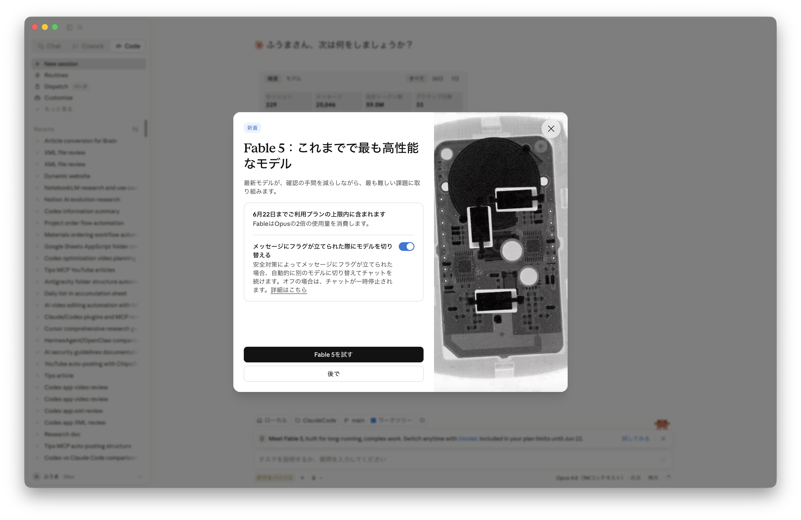
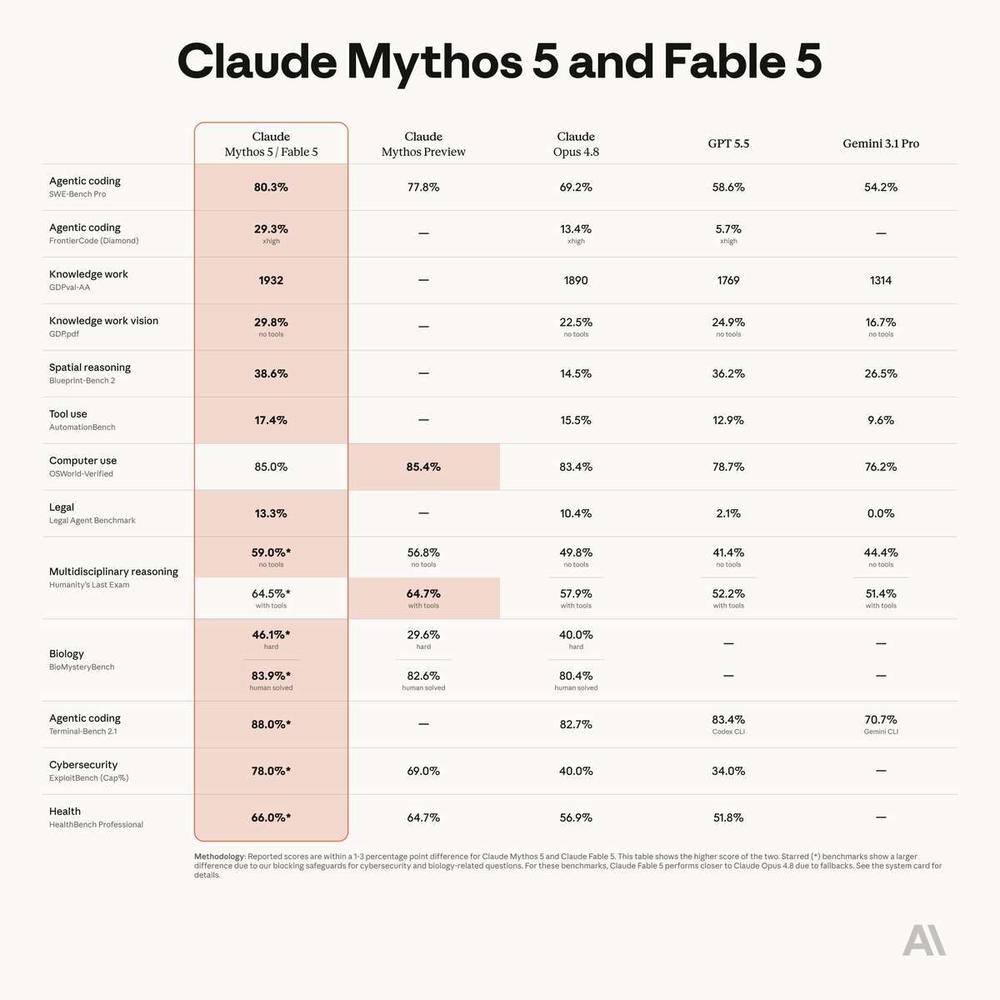
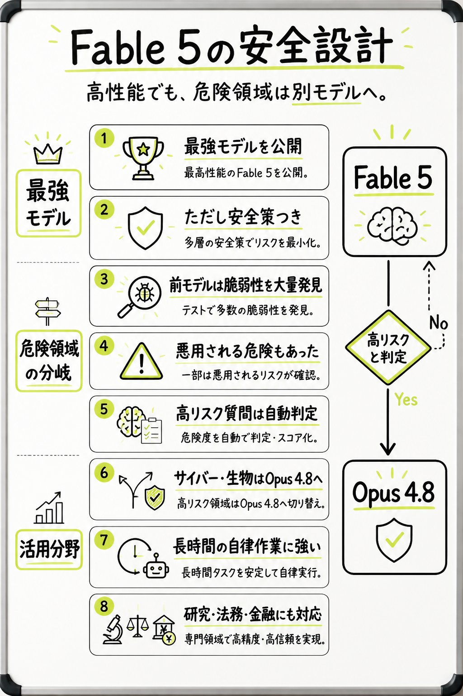
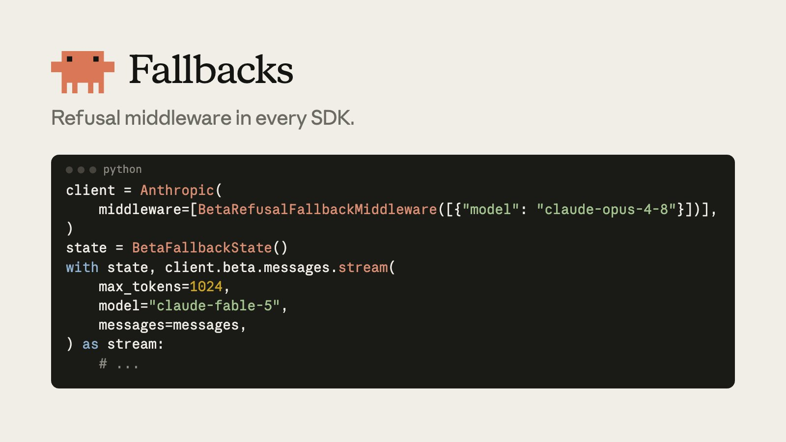
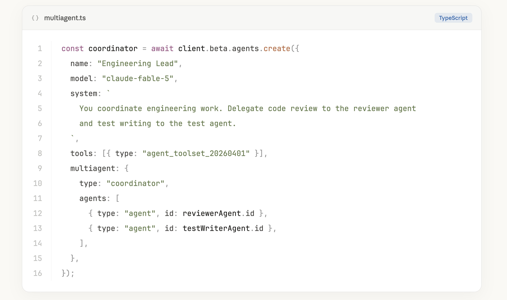
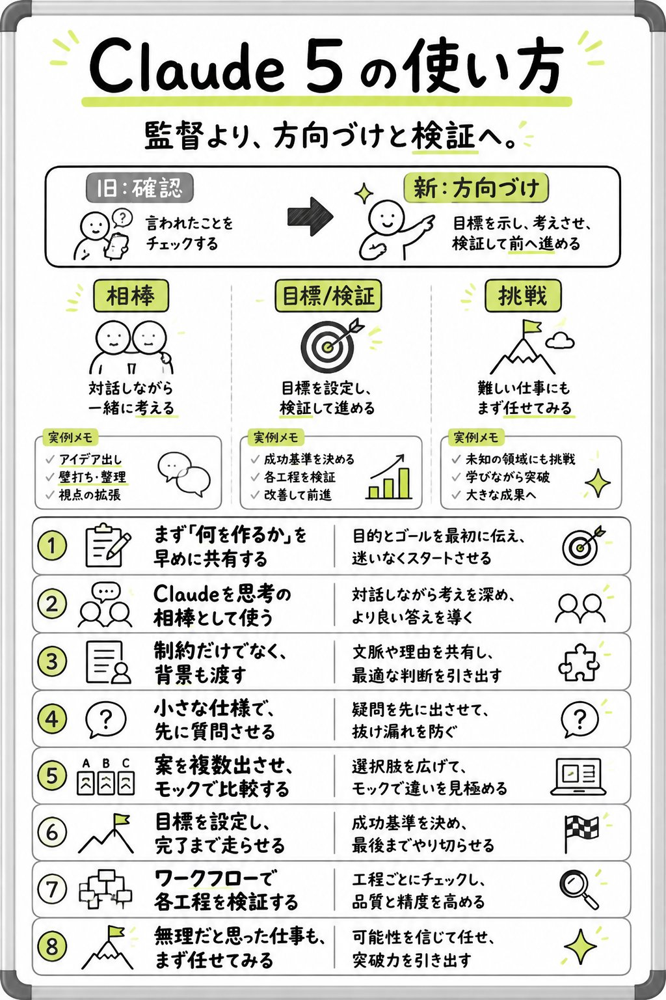
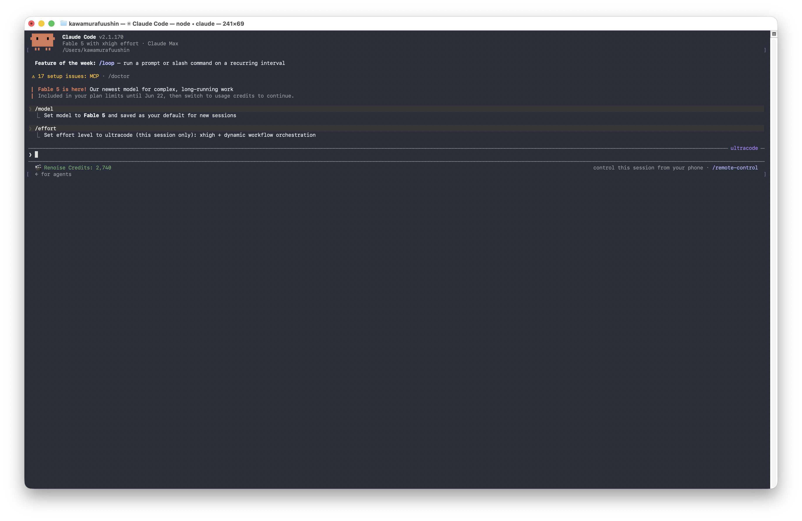

Anthropic が公開した新モデル「Claude Fable 5 / Mythos 5」を、公式発表・ベンチマーク・安全設計・料金・使い方、そして Cursor / GitHub / Notion / Lovable など業界の反応まで横断してまとめた、撮影前の手元リサーチ資料です。読者は初心者を含む前提で書いています。
数字・日付・固有名詞は出典が取れたものだけを断定し、それ以外は確度マークで分離しています。
本資料は非公式まとめであり、Anthropic 公式とは無関係です。最終確認は必ず公式情報で行ってください。
「同じ頭脳」を、安全策の有無で2つに分けたモデル。
Claude Fable 5 は、2026年6月9日に一般公開された「Mythos クラス」のモデルです。✅ 名前の由来は、Fable＝ラテン語で「物語」（安全に整えた一般公開版）、Mythos＝ギリシャ語で「神話」（ガードレールを減らした高信頼版）と読み解かれており、「Mythos クラス」は Opus を上回る新しい能力階層を指します。🔶 Anthropic が広く提供してきた中で最も高性能、と位置づけられています。一方の Claude Mythos 5 は、中身（基盤モデル）は Fable 5 と同一で、一部の安全策（セーフガード）を取り外したバージョン。当初は「Project Glasswing」を通じて、サイバーセキュリティの専門家やインフラ事業者など限られた相手にだけ提供されます。✅
つまり両者の差は能力ではなく“安全策の効き方”だけ。一般ユーザーが触れるのは Fable 5 で、こちらには後述の「高リスクな要求を Opus 4.8 に回す」仕組みが入っています。Mythos 5 は、防御研究など正当な理由で安全策の制約を外す必要がある専門家向けの特別版、とイメージすると分かりやすいです。
系譜としては、Mythos 5 は Claude Mythos Preview の後継です。提供母体の Project Glasswing は2026年4月開始の米政府・サイバー防御者・重要インフラ事業者向け協業で、現在15か国超・約150組織に拡大中。一般ユーザーは利用できず、申し込めば使えるものではありません。なお生物分野には別枠で、サイバー策は残したまま生物・化学策だけ外した Fable を少数の研究者に提供する計画も示されています（Mythos 5 とは別系統）。✅ 公式
disabled 不可・旧来の extended thinking 非対応）、深さは effort で制御。生の思考は返らず、必要なら要約済み thinking を取得。✅ 公式モデルIDは claude-fable-5 / claude-mythos-5。AWS（Amazon Bedrock）では anthropic.claude-fable-5、Vertex AI では claude-fable-5 を用います。Mythos 5 のクラウドID欄は現状「限定提供（Limited availability）」。提供面は Claude API・Claude Platform on AWS・Amazon Bedrock・Vertex AI・Microsoft Foundry。✅ 公式

公式発表とローンチ時のデモで語られた代表的な伸びどころ。
コード関連タスクで突出。公式は、決済の Stripe 社で 5,000万行の Ruby コードベースの移行を1日で完了した事例を挙げています。手作業ならチームで2か月以上かかる規模で、「数か月分のエンジニアリングを数日に圧縮した」と表現されています。Cognition の FrontierCode 評価では、medium（中）の effort でもフロンティアモデルの中で最高スコアとされています。
Hebbia の Finance Benchmark（上級者レベルの推論）で最高スコアを獲得。文書ベースの推論、図表・グラフの解釈、問題解決で大きく前進した、とされています。
視覚を伴うタスクで新しい最高水準（SOTA）に。科学図から正確な数値を抜き出す、スクリーンショットだけから Web アプリのソースコードを再構成するといった芸当が紹介されています。さらにデモ例として、ゲーム「Pokémon FireRed」を画面のピクセル情報だけでプレイできた（多くの場合追加ツール不要）という報告もあります。🔶
これまでの Claude より長く自律的に動けるのが特徴。ファイルベースの永続メモリを与えた状態でゲーム「Slay the Spire」をプレイさせると、Opus 4.8 の3倍の伸びを見せた、という例も挙げられています。長い工程でも自分で書いたノートを参照しながら出力を磨き続ける動きが報告されており、状態を保存しながら進め続ける力が強くなっています。🔶 後半はデモ報告
生命科学の領域（主に安全策を外した Mythos 5 側のデモ）では、タンパク質設計のワークフローを約10倍加速した、自律的にターゲットとツールを選び失敗を繰り返しながら新規の科学的仮説を生成し、その一部が別の研究論文で独立に検証された、といった事例が紹介されています。さらに、138種の生物データからゲノミクスモデルを自律設計・訓練し、近年の Science 誌掲載モデルを上回る性能を約100分の1のサイズで達成した、という報告も。数値はいずれもローンチ時の紹介ベースで、再現条件などの詳細は今後の検証待ちです。
Mythos 5 / Fable 5 と、Mythos Preview・Opus 4.8・GPT 5.5・Gemini 3.1 Pro の比較。🔶 公式比較図からの書き起こし ＋ ⚠️ 競合（GPT 5.5 / Gemini 3.1 Pro）の名称・数値と*印スコアは一次未検証

| ベンチマーク | Mythos 5 / Fable 5 | Mythos Preview | Opus 4.8 | GPT 5.5 | Gemini 3.1 Pro |
|---|---|---|---|---|---|
| Agentic coding | 80.3% | 77.8% | 69.2% | 58.6% | 54.2% |
| Agentic coding | 29.3% | — | 13.4% | 5.7% | — |
| Knowledge work | 1932 | — | 1890 | 1769 | 1314 |
| Knowledge work vision | 29.8% | — | 22.5% | 24.9% | 16.7% |
| Spatial reasoning | 38.6% | — | 14.5% | 36.2% | 26.5% |
| Tool use | 17.4% | — | 15.5% | 12.9% | 9.6% |
| Computer use | 85.0% | 85.4% | 83.4% | 78.7% | 76.2% |
| Legal | 13.3% | — | 10.4% | 2.1% | 0.0% |
| Multidisciplinary reasoning | 59.0%* | 56.8% | 49.8% | 41.4% | 44.4% |
| Multidisciplinary reasoning | 64.5%* | 64.7% | 57.9% | 52.2% | 51.4% |
| Biology | 46.1%* | 29.6% | 40.0% | — | — |
| Biology | 83.9%* | 82.6% | 80.4% | — | — |
| Agentic coding | 88.0%* | — | 82.7% | 83.4% | 70.7% |
| Cybersecurity | 78.0%* | 69.0% | 40.0% | 34.0% | — |
| Health | 66.0%* | 64.7% | 56.9% | 51.8% | — |
方法論（公式注記の要約）：Mythos 5 と Fable 5 のスコア差は通常1〜3ポイント以内で、本表は両者のうち高い方を掲載。*印は差が大きいベンチで、サイバー・生物関連の質問に対する遮断（ブロッキング）safeguard の影響。これらでは Fable 5 はフォールバックにより Opus 4.8 に近い挙動になります。詳細はシステムカード参照。🔶
第三者の独立評価（参考）：Cursor の CursorBench 3.1 では Fable 5 Max が 72.9% でトップ（2位は Opus 4.7 Max の 64.8%）。構成別は Extra High 72.0% / High 70.6% / Medium 69.8% / Low 64.2%（出典：cursor.com/evals）。✅ Cursor 公開値
「拒否」ではなく「格下げして回答」する、という発想。

Fable 5 の中心的な安全策は自動分類によるルーティングです。✅ モデルがサイバーセキュリティ／生物・化学／モデル蒸留に関わる要求を検知すると、その質問にはぴしゃりと拒否を返すのではなく、次に高性能なモデルである Claude Opus 4.8 が代わりに応答します。これにより「正当な利用者はちゃんと助けを得つつ、高リスクな悪用は防ぐ」という両立を狙っています。
このフォールバック（Opus 4.8 への切り替え）が起きるのは平均で全セッションの5%未満で、発生時はユーザーに通知されます。✅（公式原文：“Users are informed whenever a fallback occurs—on average in less than 5% of sessions.”）分類器は意図的に保守的（安全側に倒す）設定で出発しており、Anthropic はローンチ後に誤検知（false positive）を減らすために安全策を改善し続けるとしています。前述のベンチで*印が付いた項目は、この遮断・フォールバックの影響で Fable 5 のスコアが Opus 4.8 寄りになっている領域です。
そして Mythos 5 は、こうした安全策を一部の領域で解除したバージョン。✅ 現状は「少数のサイバー防御者・重要インフラ事業者（Glasswing パートナー）」に限定提供で、将来は防御的サイバー研究や生物医学研究向けに、信頼できるアクセスプログラムを通じて拡大する意向が示されています。
堅牢性については、外部バグバウンティ＋外部レッドチームが1,000時間超のテストで「普遍的なジェイルブレイク」を発見できなかったとされます。一方で、過去のAIモデルが繰り返し破られてきた経緯から、持続性には懐疑的な声もあります（中立に両論併記）。🔶 一次＋報道
高リスク判定が出ると回答は Opus 4.8 になり、ベンチ上 Fable 5 より低い項目（前掲の*印）が出ます。フォールバック時はユーザーに通知されます（平均5%未満）。公式も「正当なセキュリティ作業・有益な生命科学の作業でも分類器が作動しうる」と明記しており、その場合の標準の救済手段が下記の別モデルへの自動フォールバックです。✅ 公式
Fable 5・Mythos 5 は安全分類器を動かすため、全トラフィックに最大30日のデータ保持が必須です（公式上は Covered Models 指定で30日保持・ゼロデータ保持(ZDR)不可）。保持データは新モデルの学習や安全以外の目的には使わず、ほぼ全ケースで約30日後に削除されると説明されています。GitHub Copilot の告知（原文）：“Claude Fable 5 requires data retention … retains prompts and outputs for up to 30 days to operate safety classifiers … This distinguishes it from other Claude models … which operate under Zero Data Retention.”✅ 公式
Fable 5 がリクエストを拒否すると、Messages API はエラーではなく HTTP 200 の成功応答として stop_reason: "refusal" を返します。あわせて stop_details に「どのカテゴリの分類器が反応したか」が入ります（マッピングできない場合は null）。
| category | 意味 |
|---|---|
"cyber" | マルウェア・エクスプロイト開発などサイバー被害につながりうる要求。正当なセキュリティ作業でも作動しうる |
"bio" | 危険な実験手法など生物学的被害につながりうる要求。有益な生命科学の作業でも作動しうる |
"reasoning_extraction" | モデルの内部推論を応答テキストとして再現させる要求（→ §8 参照。構造化 thinking で代替） |
拒否されたときの自動リトライは2系統あります。サーバー側フォールバックは、リクエストに fallbacks: [{ model: "claude-opus-4-8" }]（最大3モデル）とベータヘッダ server-side-fallback-2026-06-01 を付けるだけで、API が1往復の中で次のモデルに引き継ぎます（Claude API / Claude Platform on AWS のベータ。Bedrock / Vertex / Foundry や Batches では不可）。発動するのは安全分類器の拒否のみで、レート制限やサーバーエラーでは発動しません。応答には「どこでモデルが切り替わったか」を示す fallback コンテンツブロックと、試行ごとの記録 usage.iterations が入ります。
クライアント側（SDKミドルウェア）は、TypeScript / Python / Go / Java / C# の各SDKに用意されており、クライアントに1回設定すれば client.beta.messages 経由の呼び出しが自動でリトライされます（図⑦のコード。Ruby / PHP は手動リトライ）。

from anthropic import Anthropic, BetaFallbackState, BetaRefusalFallbackMiddleware
# 拒否されたら指定モデルへ自動リトライ。fallback-credit ヘッダも自動付与
client = Anthropic(
middleware=[BetaRefusalFallbackMiddleware([{"model": "claude-opus-4-8"}])],
)
state = BetaFallbackState() # 会話の続きを「受理したモデル」に固定する
with state, client.beta.messages.stream(
max_tokens=1024,
model="claude-fable-5",
messages=messages,
) as stream:
# ...fallbacks 付きリクエストが約1時間そのフォールバックモデルに直接ルーティングされる（毎ターン無駄な拒否を払わない仕組み）。usage.iterations の fallback_message）をそれぞれイベント化して差分を見張る。サブエージェント内のモデル呼び出しには fallbacks が伝播しないので個別に設定。API 価格と、サブスクでの開放タイミング。
Claude Code の起動画面にも「Included in your plan limits until Jun 22, then switch to usage credits to continue.（6月22日まではプラン上限内、その後は使用クレジットに切替）」と表示され、上記スケジュールを裏づけています（図⑤）。🔶
「司令塔（coordinator）」が専門エージェントに仕事を振り分ける書き方。
開発者向けには、1つのコーディネーター・エージェントが複数の専門エージェントに委譲するマルチエージェント構成が、API で素直に書けるようになりました。下は @ClaudeDevs が示したコード例（図②）の再掲です。「Engineering Lead」がコードレビューを reviewer に、テスト作成を test ライターに振る、という構造です。

const coordinator = await client.beta.agents.create({
name: "Engineering Lead",
model: "claude-fable-5",
system: `
You coordinate engineering work. Delegate code review to the reviewer agent
and test writing to the test agent.
`,
tools: [{ type: "agent_toolset_20260401" }],
multiagent: {
type: "coordinator",
agents: [
{ type: "agent", id: reviewerAgent.id },
{ type: "agent", id: testWriterAgent.id },
],
},
});※ コードは公開画像からの書き起こしです。実際の API 仕様・パラメータ名は公式ドキュメントで確認してください。⚠️
ひとことで言うと「監督して逐一チェック」から「方向づけして検証しながら任せる」へ。

新しいモデルは賢く・自律的になったぶん、こちらの頼み方が結果を大きく左右します。難しい用語は後回しにして、まずは「こんな悩み → こう頼むだけ」で掴んでください。✅ 公式の prompting ガイドに準拠
| こんな悩み | こう頼むだけ |
|---|---|
| そっけない・物足りない | 「想定ユースケースで実用になる範囲まで、しっかり作り込んで」と“どこまでやるか”を具体的に示す（※「全部盛り」を煽ると過剰実装になりがち→§8参照） |
| 意図とズレる | 制約だけでなく背景・理由も渡す（例：「これは読み上げ用だから記号を使わないで」） |
| 形式が安定しない | お手本（例）を2〜3個見せる。「こういう形で」と完成像を示す |
| 抜け漏れが怖い | 「不明点があれば先に質問して」と、着手前に確認させる |
| 方向性を決めかねる | 「案を3つ出して、モックで違いを見せて」と複数案を比較させる |
| 長い作業を任せたい | ゴール（成功基準）を決めて「完了まで進めて」と任せ切る |
| 品質を担保したい | 「各工程をテストで検証しながら進めて」と検証を組み込む |
| 難しすぎて無理かも | まず任せてみる。賢くなったぶん“突破力”が上がっている |
「このテーマで分析ダッシュボードを作って。想定ユースケースで実用になる範囲までしっかり作り込んで。着手前に不明点があれば質問して。完成したら各機能を簡単に検証して報告して。」
コツは「あなたは監督」という比喩から、「あなたは方向づけと検証をする立場」へ意識を移すこと。細かく口出しするより、ゴール・背景・お手本を最初に渡し、要所で検証する方が良い結果になります。
本筋は軽く。ここは深掘りしたい人向けの小箱です。✅ 公式 prompting ガイド
<instructions> <context> 等で分けると誤読が減る。budget_tokens ではなく effort で制御。4段階 high / xhigh / medium / low のうち多くは high を標準、最重要タスクに xhigh、ルーチンは medium / low。Fable 5 は低 effort でも旧モデルの xhigh を上回ることがあるとされ、完了はするが時間がかかりすぎる／もっと対話的にしたい時は effort を下げる。✅ 公式tests.json／progress.txt）や git に保存して、コンテキストをまたいで長時間タスクを継続させる。reasoning_extraction 拒否カテゴリが作動し Opus 4.8 へのフォールバックが増えます。可視化が必要なら adaptive thinking の構造化 thinking ブロックを読む、進捗表示は send-to-user ツールを使う、で代替。✅ 公式ターミナルからでも、新モデルがすぐ選べる。

/model から Fable 5 を選択し、既定モデルに設定した画面Claude Code の CLI でも、/model から Fable 5 を選んでデフォルトに設定できます。🔶 スクショより 画面には「Fable 5 is here! Our newest model for complex, long-running work（複雑で長時間の作業向けの最新モデル）」と表示され、ヘッダーには「Fable 5 with xhigh effort」と出ています（effort は /effort で切替可能）。前章までの「長時間の自律作業に強い」という特性が、そのまま日常のコーディング環境で使える、というわけです。
/model claude-fable-5 を実行。1Mコンテキスト版は /model claude-fable-5[1m]。Claude Code 担当の Boris Cherny 氏による実用 Tips：ターミナルで /usage を実行して少し下にスクロールすると、どの skill / MCP / プラグインがトークンを消費しているかの詳細内訳が見られます。「たいていは出来の悪いプラグインが原因」とのこと。Fable 5 はトークナイザの仕様上、消費が増えやすい（§1）ので、移行直後のチェックにおすすめです。🔶
高 effort では個別リクエストでも数分、自律ランは数時間に及ぶことがあります（公式は「チームが遭遇する最大級の変化」と表現）。固まったわけではないので、ツールやハーネス側の timeout・ストリーミング・進捗インジケータを移行前に見直し、ブロッキングではなくスケジュールジョブ等で非同期に確認する設計が無難です。✅ 公式
公式アカウントの投稿＋リプ欄、そして各社（ツール・プラットフォーム）の反応。🔶 取得中／一部は手動で補完
各カードの本文・返信は Grok（X検索）で取得したものです。@claudeai スレッドは返信が1,600件超あり、ここではエンゲージメント上位からの抜粋です（全件網羅ではありません）。完全なリプ全文が必要な場合は手動コピペで補完できます。
※ 引用リプ内の競合モデル名（GPT-5.5 等）はユーザーの発言であり、その実在は一次未確認です。
📝 要約：Fable 5 は一般公開向けの Mythos クラス。ほぼ全ベンチで SOTA、長く複雑なタスクほど差が開く。サイバー／生物・化学／蒸留の質問は Opus 4.8 へフォールバック（通知あり・平均5%未満）。同時に安全策を一部解除した Mythos 5 を Glasswing パートナー限定で提供。
※ エンゲージメント上位から抜粋。本スレッドは1,600件超の返信があり全件網羅ではありません。 該当ポスト
multiagent.ts コード例＝図②はこのスレッド内で公開）
※ エンゲージメント上位から抜粋（全件網羅ではありません）。 該当ポスト
/usage での skill / MCP / プラグイン別内訳の確認方法を案内（→ §9 に収録）。/model claude-fable-5（1M版は claude-fable-5[1m]）、CLI は v2.1.170 へ、デスクトップは最新版へ——というトラブルシュート投稿。ロールアウト直後はアクセス不可やレート制限への不満リプも多数。ローンチ当日、主要な開発ツール／プラットフォームが一斉に Fable 5 対応を発表しました。「長時間・自律のコーディング／知識作業」という打ち出しが各社で共通し、また GitHub・Notion はそろって「安全分類器を動かすためデータ保持が必要」と明記しているのが特徴です。🔶 各社X投稿より
--resume に出るように修正。”ANTHROPIC_DEFAULT_FABLE_MODEL ほか、モデル識別子 claude-fable-5 / claude-mythos-5 が追加。agent_toolset_20260401 等）は公開画像からの書き起こしで、API の正式仕様は未確認です。agent_toolset_20260401 等のエージェントAPIは、参照した公式2ページ（モデル概要・発表）には記載がなく未確認。公式が明記する起動時サポート機能は Effort / Task budgets / memory tool / context editing / Compaction / Vision です。